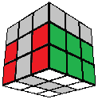
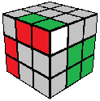
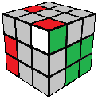
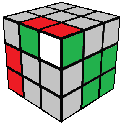
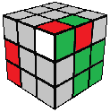
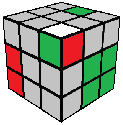
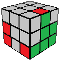

3x3 ROUX TUTORIAL
Next, we form another 1x2x3 block on the opposite side of the cube without disrupting the first block.
As with the first block, there are no set algorithms. F2L techniques can be helpful in forming the second block while preserving the first one, but there may be more efficient ways to form the block by utilizing the M slice (M turns and r turns). Here are some example ideas.

(rUr')
(rUr')

(U'MU2)(rU'r')
(U'MU2)(rU'r')

(MU)(rU'r')
(MU)(rU'r')

(U'M2U2)(rU'r')
(U'M2U2)(rU'r')

(rU'r') U2 (rUr')
(rU'r') U2 (rUr')

(U'rU')(MUr')
(U'rU')(MUr')
Solving the second block in 12-14 moves is a good goal.
Once the second block is complete, we are ready to solve the top corners using CMLL.
 Back
Back